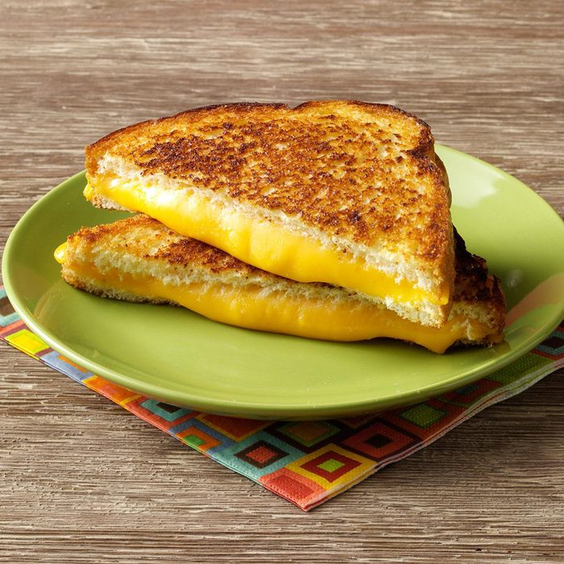

Grilled Cheese

Description
Grilled cheese is a classic American sandwich that has been around since 1920. It is a hot sandwich made with buttered and toasted bread and originally filled with American cheese, but is now commonly made with one or more different cheeses.
Ingredients
- 4 Slices Italian bread
- 2 Slices Muenster Cheese
- 2 Slices Swiss Cheese
- 2 Slices American Cheese
- 2 Slices Part-Scim Mozzarella Cheese
- 1 Tablespoon Butter
- 1/4 Teaspoon Garlic Salt
Steps
- On two slices of bread, layer the cheeses; top with remaining bread. Butter the outsides of the sandwiches; sprinkle with garlic salt.
- Cook on a grill or panini maker for 1-2 minutes or until bread is browned and cheese is melted.